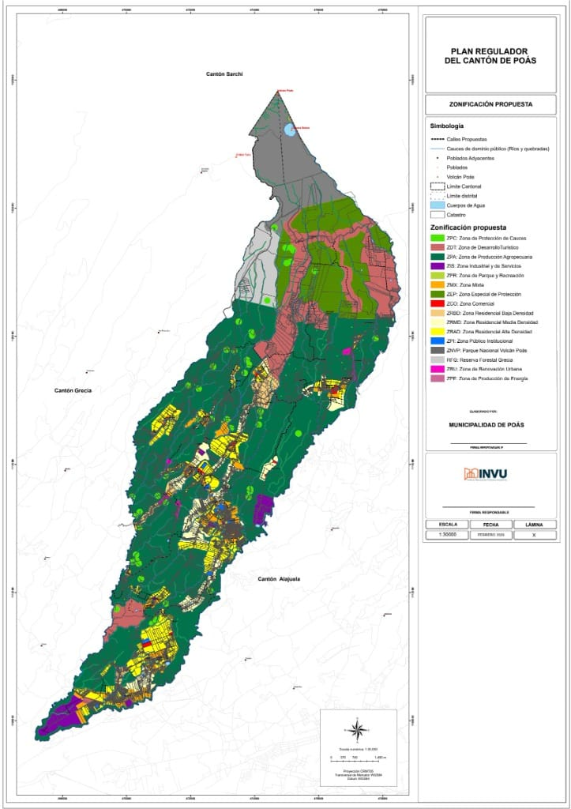

The planning instrument that guides sustainable development, environmental protection and territorial management in the Canton of Poás.
The Land Use Plan is the local planning instrument that defines land use and development standards in our canton. Its objective is to ensure orderly and sustainable growth, protecting hydrological recharge zones and managing volcanic risk.
Definition of residential, commercial, industrial and protection areas for orderly use of the territory.
Safeguarding of forests, springs and biological corridors essential for local biodiversity and hydrological recharge zones.
Special regulations for the areas of direct influence of Poás Volcano and its restriction zones.
Protection of the Poás, Colima and Barva aquifers, recharge zones and the canton's rivers as a strategic resource.
Regulation of construction, setbacks, heights and densities to guarantee the quality of life of the community.
| Code | Zone | Permitted Uses |
|---|---|---|
| ZR | Residential | Single-family and two-family housing |
| ZC | Commercial | Commerce, services and offices |
| ZM | Mixed | Residential with minor commercial uses |
| ZI | Industrial | Agro-industry and workshops |
| ZP | Protection | No construction — environmental conservation |

A technical tool by INVU that guides municipal governments in the formulation, update and modification of Land Use Plans in Costa Rica.
Arts. 169 and 170 — Municipal autonomy and authority to administer and plan the territory.
Grants INVU the authority to plan urban development and prepare Land Use Plans.
Framework law: defines the Land Use Plan, its minimum content (Art. 16), procedure (Art. 17) and the five Urban Development Regulations (Art. 21).
Introduces territorial planning as a legal concept linked to sustainable development.
Creates the National Planning System and integrates the regional and urban dimension.
Regulates the incorporation of the Environmental Variable in Territorial Planning through the EIVA-POT methodology.
🏢 Responsible Institutions
Multidimensional analysis across five axes: Social, Physical-Spatial, Economic, Political-Institutional and Legal. Includes a Cartographic Atlas with thematic maps.
Projection of trends and construction of future scenarios (territorial foresight) to anticipate changes and guide sustainable development.
Defines principles, urban development objectives, strategic actions and the planning time horizon.
5 mandatory regulations (Art. 21, Law No. 4240): Zoning, Subdivision, Construction, Official Map and Urban Renewal.
IFA, DAM, RIC and IME. Requires Environmental Viability approval from SETENA.
Georeferenced cartographic representation in the official CRTM-05 projection that integrates territorial information layers.
Designation of the Local Planning Body; financial management; area delimitation; hiring of the Planning Team; preparation of the Citizen Participation Strategy with a gender and diversity approach.
Data collection, scale selection, integration of cartographic layers and validation of the base map.
Application of the EIVA-POT methodology (IFA or DAM-RIC-IME) with coordination before SETENA.
Analysis of the current situation by thematic axes; data systematization and preparation of the diagnostic cartographic atlas.
Projection of trends and construction of future scenarios; strategic recommendations.
Formulation of the Urban Development Policy and drafting of the Urban Development Regulations; proposal cartographic atlas.
Formal notice (minimum 15 business days); collection of citizen comments; hearing report; special considerations for Indigenous Peoples.
📌 Steps following the preparation stages:
Through the Zoning Regulation, it defines conforming, conditional, non-conforming and prohibited uses in each zone of the canton.
The regulations govern densities, heights, coverages, setbacks and minimum lot sizes, controlling the form and intensity of urban development.
Integrates the environmental variable and considers climate change, fragility areas and risk zones, limiting development in vulnerable territories.
The Official Map and Road Map determine the cantonal road network and reserves for public services, parks and community facilities.
Coordinated with the National Urban Development Plan, INDER's Rural Territorial Development Plans and other sectoral instruments.
It is the reference instrument the municipality uses to issue permits and control territory development in real time.
The Public Hearing ensures the community has a say in territorial decisions, turning the plan into an instrument of local governance.